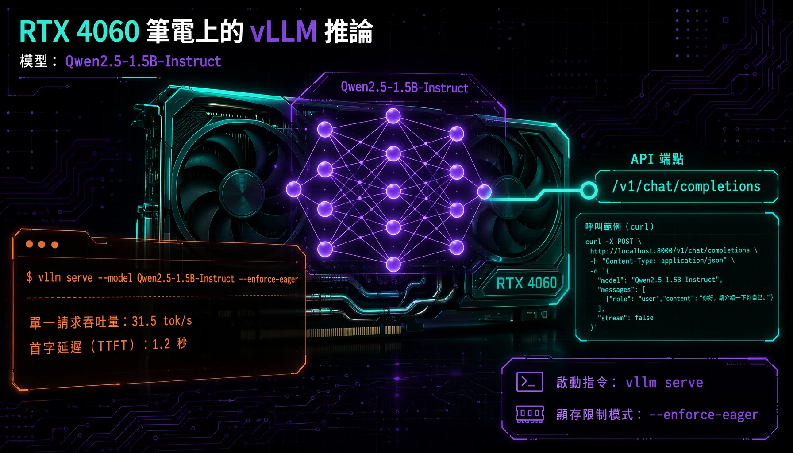
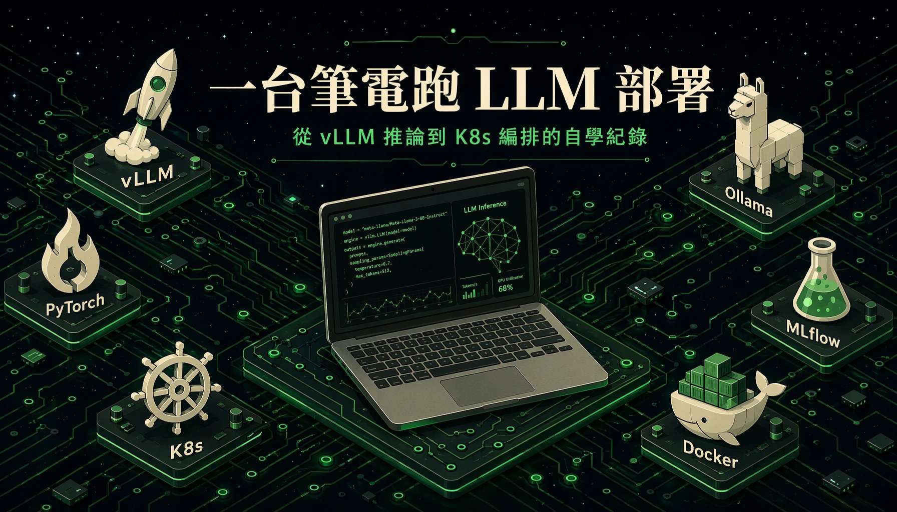

用一台搭載 RTX 4060（8GB 顯存）的筆電，從零走了一遍 LLM 部署的技能樹：vLLM 推論服務、Ollama 選型對照、MLflow 實驗追蹤、Docker 容器化、K8s 容器編排、PyTorch 訓練框架，最後讀了群聯 aiDAPTIV+ 的儲存推論加速架構。每塊都在本機實際操作驗證過，benchmark 數據用 MLflow 記錄，踩到的坑全部收在這篇。
對 LLM 從訓練到上線的整條部署路徑感到好奇，想在自己的筆電上走過一遍，搞清楚推論引擎、實驗追蹤、容器化、容器編排這些工具各自解決什麼問題、彼此怎麼接。設備是一台 Windows 11 筆電，GPU 是 RTX 4060 Laptop（8GB 顯存），WSL2 裝了 Ubuntu。先前在 NTUST MVC Lab 的課程作業已經用 PyTorch 訓練過 DQN 和 U-Net，對訓練端有基礎，缺的是推論到部署這段。

# 六塊主題總覽
| 主題 | 工具 | 實際驗證 |
|---|---|---|
| LLM 推論引擎 | vLLM 0.24 + Ollama 0.30 | WSL2 部署 + benchmark 4 組 |
| 實驗追蹤 | MLflow | 記錄 benchmark、UI 比較 |
| 容器化 | Docker 29.1.3 | hello-world → build → run → curl |
| 容器編排 | k3s v1.36.2 | Deployment + NodePort Service |
| 訓練框架 | PyTorch 2.11 + CUDA 13.0 | GPU 線性迴歸驗證 |
| 儲存推論加速 | aiDAPTIV+ | 閱讀理解（非實作） |
# 逐塊拆解
LLM 推論引擎 — vLLM 與 Ollama
vLLM 在 WSL2 上的部署可以拆成七步：用 uv 建一個 Python 3.12 的虛擬環境（本機預設是 3.13，vLLM 只支援 3.9 到 3.12），裝 vllm 套件，把 Qwen2.5-1.5B-Instruct 的權重下載到本地（約 3GB），補裝缺少的 gcc（編譯 C extension 需要），然後用 vllm serve 起服務。8GB 顯存跑 vLLM 需要加 --enforce-eager 關閉 CUDA graph，讓 vLLM 用即時運算取代預先佔滿顯存的策略，代價是吞吐量降低。起來之後用 curl 打 OpenAI 相容的 /v1/chat/completions 端點，拿到繁體中文回覆，服務通了。
重跑啟動流程時碰到兩個 bash 基本雷：@~ 在某些 shell 環境下不會自動展開成 home 路徑，要寫完整路徑或用 $HOME；多行指令的斷行符 \ 後面不能跟空白字元，否則下一行被當成新指令。
Ollama 裝在 Windows 端（0.30.11），機器上已 pull 好 qwen2.5:1.5b（986MB，Q4_K_M 量化），一條指令 ollama run qwen2.5:1.5b 就能聊天。它同樣提供 OpenAI 相容 API（localhost:11434），程式從 vLLM 切到 Ollama 只要換 URL 和模型名，不改程式碼。
兩邊同時跑同一顆 Qwen2.5-1.5B、走同一套 API，量兩個指標：吞吐（tok/s）和首字延遲（TTFT）。結果用 MLflow 記錄：
| 情境 | Ollama 0.30 | vLLM 0.24 | 差距 |
|---|---|---|---|
| 單一請求吞吐 | 47.3 tok/s | 31.5 tok/s | Ollama +50% |
| 8 個同時請求總吞吐 | 119.4 tok/s | 102.4 tok/s | Ollama +17% |
在這台 8GB 筆電上，Ollama 兩項都贏。原因是 vLLM 被迫用 enforce-eager 模式跑，顯存又被 WSL2 和其他程式分走一部分，PagedAttention 的並發優勢發揮不出來。vLLM 的長處適合伺服器級 GPU（24GB 以上）、跑大模型、高並發場景。
模型大小的影響
1.5B 參數的模型太小，問它「vLLM 是什麼」兩邊都答錯，編出不存在的功能描述，屬於典型的小模型幻覺。引擎決定「跑多快、能服務多少人」，模型決定「答得多準」，這兩件事要分開看。Ollama 跑得快代表效能優勢，vLLM 答錯則是模型能力的限制，這兩者分屬不同層面。
實驗追蹤 — MLflow
MLflow 裝在 Windows 上（pip install mlflow），用來記錄上面的 benchmark 結果。記了 4 組數據（vLLM 單請求、vLLM 並發、Ollama 單請求、Ollama 並發），用 mlflow ui 開 web 介面，在 Compare 頁面把四組攤開比較吞吐和延遲。數據存在 mlflow.db 這個 SQLite 檔裡，下次開 UI 會自動讀取，實驗結果不會消失。
踩了一個 Windows 的坑：MLflow 的 web server 啟動時預設會開多個 worker process，Windows 的多進程機制跟 Linux 不同，直接跑會卡住。加 --workers 1 限制成單進程就正常了。

容器化 — Docker
Docker 29.1.3 裝在 WSL2 的 Ubuntu 裡，daemon 由 systemd 管理。練習的路線是：docker run hello-world 跑通確認環境 → 自己寫一個 Flask 小 API 加 Dockerfile → docker build 打成 image → docker run 跑成 container → curl 打通端點 → 最後清理 container 和 image。
全流程走完等於走過一次「開發 → 打包 → 部署 → 驗證」。把這條路線拉長，把 Flask 小 API 換成 vLLM 推論服務，就是實際部署 AI 模型的同一套動作。
容器編排 — K8s（k3s）
原本用 kind（Kubernetes IN Docker）在 WSL2 上練習，踩到 docker-in-docker 的結構問題：WSL2 裡的 dockerd 偶爾會自動重啟，重啟的連鎖反應直接把 kind 建立的叢集殺掉；重啟後 cgroup scope 建立又失敗，叢集救不回來。這個問題在 kind 的 GitHub issue 裡有人回報過，屬 WSL 環境下的已知限制。
改用 k3s（v1.36.2+k3s1），一條安裝腳本裝好。k3s 是輕量級 K8s，直接跑在 Linux 上，省掉了把 K8s 跑在 Docker 容器裡再跑在 WSL2 裡的那層套娃。練習完用 systemctl disable --now k3s 把它關掉省資源，下次 systemctl start k3s 叫醒就好。
在使用 K8s 的 NodePort 時，需注意它綁定的是節點 IP，因此直接使用 curl localhost:節點埠 可能無法通過。解決方法是先用 hostname -I 查詢 WSL2 分配的虛擬 IP，然後使用該 IP 進行訪問。
訓練框架 — PyTorch
裝 vLLM 時已經把 PyTorch 一起帶進來了（torch 2.11 + CUDA 13.0，在 vllm 的 venv 裡），所以練習 PyTorch 不需要額外裝任何東西，直接在同一個 venv 裡跑。寫了一個最小的 GPU 訓練腳本：在 CUDA 上跑線性迴歸 y = 2x + 3，loss 從 148 降到 0.26，驗證 GPU 訓練路徑通了。
先前在 NTUST MVC Lab 的課程已經用 PyTorch 做過 DQN（150 萬步，評估 2990 分）和 U-Net 語意分割（pixel accuracy 0.8505），對訓練迴圈、loss 曲線、optimizer 都有操作經驗。這次確認的是本機 GPU 環境在 WSL2 上跑得通，訓練端和推論端接在同一張卡上可以正常運作。
儲存推論加速 — aiDAPTIV+
aiDAPTIV+ 是群聯電子開發的一套產品，把 SSD 儲存和 AI 推論加速結合在一起。aiDAPTIV+ 的設計分為三個層級：Cache 負責推論時 KV cache 的暫存加速；Link 處理主機間的模型分散推論；Pro 則將部分運算直接移至 SSD 控制器執行。
幾個公開的技術指標：用雙 GPU 加上 8TB SSD 的配置跑 Llama 405B 微調；SSD 用 100 DWPD 的 SLC 等級顆粒承受 AI 工作負載的高寫入量；Link 3.0 宣稱把首字延遲（TTFT）壓到原來的十分之一。
透過理解 vLLM 的 PagedAttention 機制，可以更清楚 aiDAPTIV+ Cache 的設計邏輯，兩者在解決 KV cache 管理問題上有相似之處。
# 技術環境
- OS — Windows 11 + WSL2 Ubuntu 26.04
- GPU — NVIDIA RTX 4060 Laptop（8GB 顯存，driver 581.57）
- Python — 3.12（vLLM venv，via uv）/ 3.13（Windows 預設）
- vLLM — 0.24 + Qwen2.5-1.5B-Instruct（safetensors 原格式）
- Ollama — 0.30.11 + qwen2.5:1.5b（Q4_K_M 量化，986MB）
- MLflow — pip install，本機 SQLite 儲存
- Docker — 29.1.3（WSL2，systemd daemon）
- k3s — v1.36.2+k3s1 + kubectl v1.36.2
- PyTorch — 2.11 + CUDA 13.0（vLLM venv 附帶）